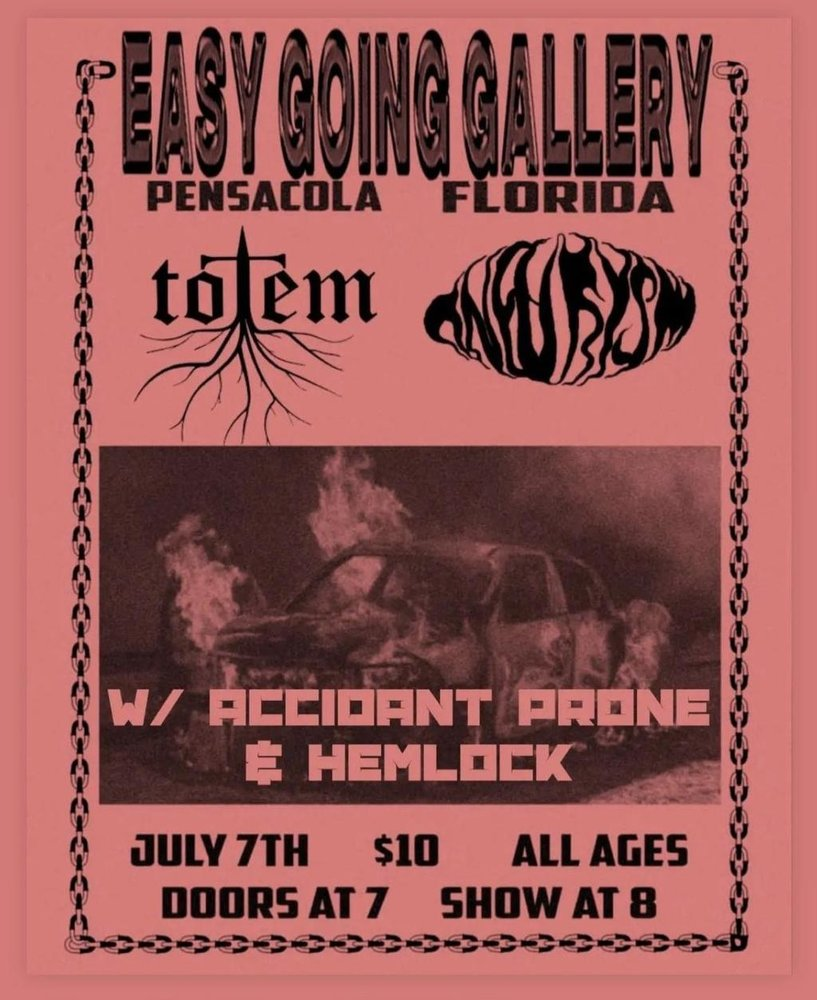

 FRI JUL 7from the archive Totem, Aneurysm, Accident Prone, Hemlock totemaneurysmaccident pronehemlock Easy Going Gallery also that nightblair sound design, dj dad, jmike @ the handlebar open in mapsshare this flyerthe archive ↗